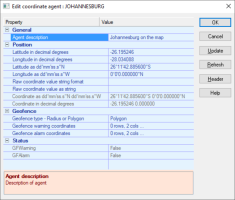
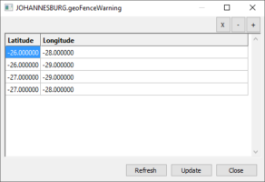
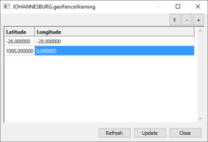

Configuring The Coordinate Agent
Configuration of the Coordinate agent is via the dialog, as shown below.

The dialog shows the static coordinates of Johannesburg as on the world map.
Typically the coordinates of an asset would be scanned to contain the current location of the asset.
- The Geofence warning and alarm areas can be defined as either a circle or as a polygon.
- Click the Geofence type property then select Radius (circle) or Polygon from the drop-down list.
When defining a polygon Geofence, you need to specify any number of points that defines the Geofence.
- Click the Geofence Warning Co-ords property options button ..., click the + button then enter the coordinates in the dialog.
- The example below shows four coordinates that define the boundaries of the polygon for the warning Geofence.

When defining a circle Geofence, you need to specify only two items of information.
- Click the Geofence Warning Co-ords property options button ..., click the + button then enter the coordinates in the dialog.
- The first entry specifies the centre point of the circle and the second entry specifies the radius of the circle in metres.
- The example below shows the centre of the Geofence as -26,-28 with a radius of 1km (1000m).
- The longitude of the second entry is disregarded and should always be 0.
